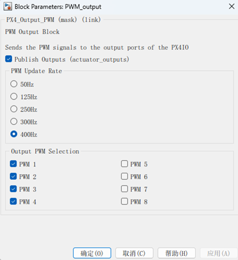

|
RflySimSDK v3.06
RflySimSDK说明文档
|
载入中...
搜索中...
未找到
|
RflySimSDK v3.06
RflySimSDK说明文档
|
| 功能 | 通过这个模块可以发送PWM信号到PX4的I/O输出端口以控制电机转动，可以选择PWM的更新率及输入通道。 |
|---|---|
| 参数 |  |
| Publish Outputs | 勾选该按钮才能进行硬件在环仿真，不勾选则只能用于实飞 |
| PWM更新率选择区域 | PWM更新率决定了PWM信号的发送频率，也就是控制信号的刷新频率。PX4_simulink_app在启动时默认设定为400Hz，但用户可以在模块对话框中设置不同的更新率。**可用值**: 50Hz、125Hz、250Hz、300Hz、400Hz。**使用场景**: 不同的执行器可能需要不同的更新率。例如，电调（ESC）通常需要较高的更新率（如400Hz），以确保控制的平滑性和响应速度。 |
| PWM端口选择区域 | 模块提供8个可用端口，分别对应PX4硬件上的8个I/O PWM输出端口。每个端口的输入是一个16位无符号整数，代表发送给硬件的PWM信号。**值范围**: 每个端口的值以微秒（usec）为单位，通常范围在1000-2000微秒之间（1500微秒对应于中立位置或1.5毫秒的脉冲宽度）。更具体地说：**1000-1100微秒**: 通常表示最小油门或空闲状态。**1500微秒**: 通常表示中立或静止位置。**1900-2000微秒**: 通常表示最大油门。 |
| Sample time（s） | 采样时间 |
| 输入 | |
| ARM Output（布尔值） | 用于解锁（启用）或锁定（禁用）PWM输出。如果 ARM Output 输入保持高电平（布尔值为 TRUE），则模块会启用PWM输出并发送信号到PX4硬件的PWM端口。否则，模块会禁用PWM输出。在ARM端口为低电平（布尔值为 FALSE）或启动时，PWM信号会被设定为900微秒的空闲值。这是为了防止电调（ESC）在没有信号或信号过低时进入超时状态。**使用场景**: 通常由遥控器（RC Tx）和用户在Simulink模型中编程的飞行模式共同控制。解锁输出是启动电机等执行机构的前提。 |
| PWM信号（uint16） | 每个信号控制对应的硬件PWM输出端口，用于控制电机或舵机。 |
| 输出 | 各个PWM信号被发送到PX4硬件的对应端口，驱动电机或其他执行器。 |
| 使用示例 | ../../5.RflySimFlyCtrl/0.ApiExps/2.PSPOfficialExps/Readme.pdf |
{kind=link}
{kind=link}